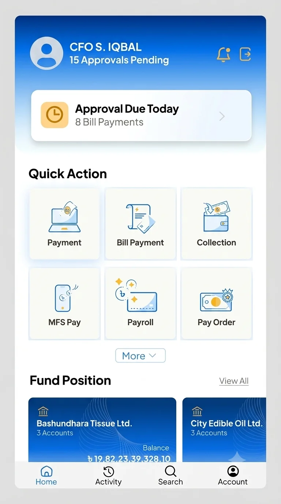
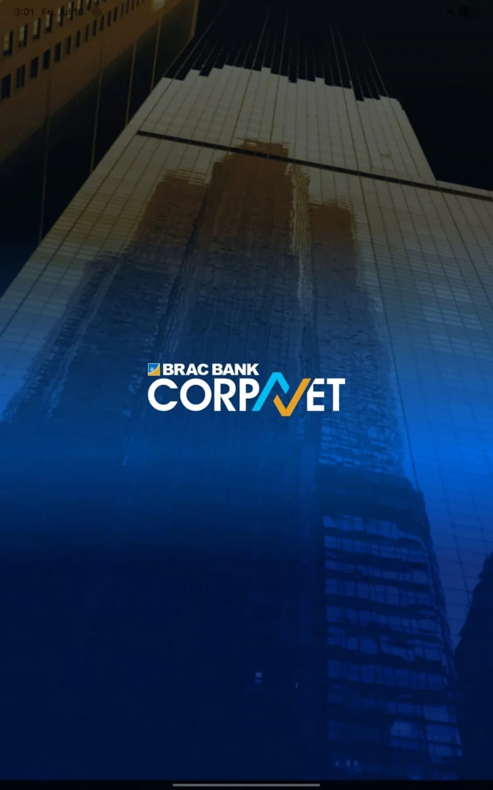

CORPnet
Mobile
Corporate banking application
A transaction-heavy mobile banking experience for BRAC Bank’s corporate customers. I built the mobile app end to end, including its security integrations, native bridges, and transactional journeys.
View on Google Play

Corporate banking requirements
Corporate banking involves more than checking a balance. Businesses need to review financial activity, act on approvals, and stay informed while they are away from their desks.
CORPnet Mobile brings account visibility, transaction monitoring, approval management, and authentication into a mobile experience for authorized corporate users. The app’s official listing describes biometric, QR, and token-based login alongside its banking capabilities.
My ownership covered the mobile application. The wider CORPnet banking platform and bank services form the product ecosystem it connects to.
End-to-end mobile development
I created the whole mobile application, with a particular focus on security. That meant working across Flutter interfaces, feature modules, API connections, authentication, and native Android and iOS integrations.
Transactional journeys
Mobile flows across payments, bill payments, payroll, collections, MFS, and pay orders, including review, confirmation, approval, and rejection paths.
Application architecture
A modular Flutter structure with GetX controllers and services, shared UI components, and Dio-based API communication.
Native integration
Kotlin and Swift platform bridges that connect the Flutter application to platform-specific biometric and device security capabilities.
Operational experience
Dashboard and approval states, account and fund visibility, messaging integration, and the session behavior around sensitive journeys.
Mobile security architecture
My security work spans several layers of the mobile application. These are the engineering areas I worked on, described at a high level.
01Identity & biometric credentials
Biometric authentication flows, device binding, and native credential handling. Platform bridges connect Flutter with OS-backed biometric credential protection, including enrollment and credential release behavior.
02Transport & secure storage
Certificate pinning in the API communication layer, secure local storage, and token lifecycle integration. This work connects the application’s networking and authentication responsibilities.
03Device & runtime integrity
Native integrations for device integrity signals and runtime checks, including rooted or jailbroken environments and runtime instrumentation detection. The work spans Dart, Kotlin, and Swift.
04Session & lifecycle protection
Lifecycle-aware shielding, credential clearing, session expiry handling, and validation when the application returns from the background. These flows need to work alongside legitimate biometric prompts and normal app transitions.
Flutter architecture and native integrations
The Flutter codebase separates feature modules, controllers, services, and shared components. Native bridges extend that foundation for security work that belongs at the platform level.
The project also integrates Firebase messaging and crash reporting. Together, these are the practical pieces behind a mobile product that has to handle financial workflows and ongoing delivery.
Application screens
Select a screenshot to enlarge. Images from the official Google Play listing.
Discuss a role or project
Available for mobile application engineering opportunities.